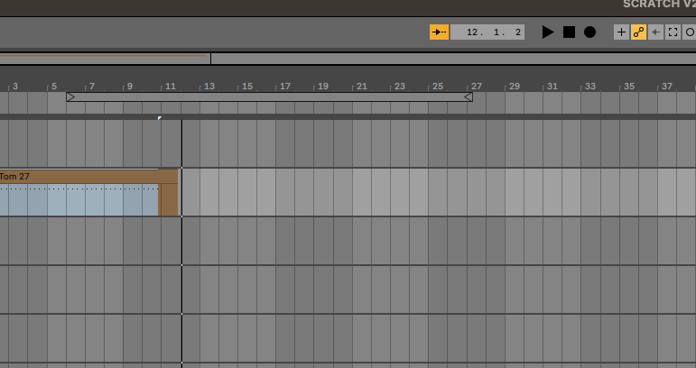
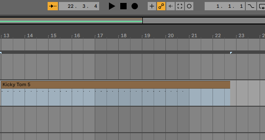
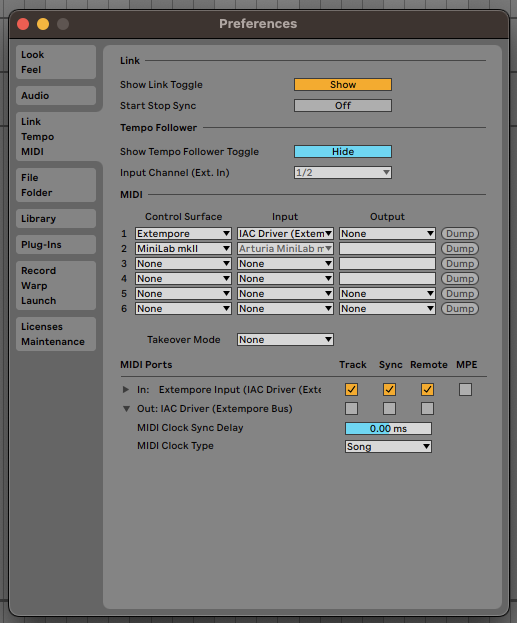

Ableton Live
Controlling Ableton Live via Extempore & MIDI
In a nutshell:
- Create a new virtual device using the Audio Midi Setup app
- Restart Ableton LIVE, open preferences and add a Control Surface for extempore. Ensure INPUT sections 'Track' and Remote' are on.
- Start Extempore, init MIDI and
(pm_print_devices)to see what device number Ableton is on, then do the usual(define *mididevice* (pm_create_output_stream <number>))
See also
OSX Audio Midi Setup
- Open up Audio Midi Setup app; click on submenu
Show Midi Studio - Double click on IAC driver and add a new entry called 'Extempore BUS' (any name would do). Save and close.

See also:
Ableton MIDI settings
{kind=link}
Restart Ableton LIVE, open preferences and add a Control Surface for extempore. Ableton Live you can you can create your own MIDI mappings script so I did one and named it 'extempore' - as a result the name appears in the dropdown in the Control Surfaces section.
Note: this is an extra step, extempore-live midi communication will work even without the script (using default settings).
Then, on the MIDI Ports Input section:
- Set
Track,SyncandRemoteinputs to true - Ready to go! (route extempore MIDI to it)
Important Note: Only activate necessary MIDI ports!
Switching Sync to On for both In and Out of the same device may trigger a feedback loop and affect Live’s performance. Do not do this unless you have a specific reason.
See also
Extempore MIDI messages
Start Extempore, init MIDI and (pm_print_devices) to see what device number Ableton is on, then do the usual (define *mididevice* (pm_create_output_stream <number>)).
Channels numbers
MIDI channels a 1-based in Live, but are 0-based in Extempore! So adjust your function calls accorindingly.
You can also refer to the device using its name:
(define *DEFAULT_MIDI_DEVICE_NAME*
"IAC Driver Extempore Bus")
(sys:load_verbose "libs/external/portmidi.xtm") ;; core midi lib
(pm_initialize)
(pm_print_devices)
(define *mididevice* (pm_create_output_stream
(pm_output_device_with_name *DEFAULT_MIDI_DEVICE_NAME*)))
;;;;;;;;;;;;;;;;;;;;;;;;;;;;;;;;;;;;;;;;;;;;;;;;;
;;
;; TEST PLAY NOTES
;;
;;;;;;;;;;;;;;;;;;;;;;;;;;;;;;;;;;;;;;;;;;;;;;;;;
(let ((beat (*metro* 'get-beat))
(midichannel 1))
(play midichannel 60 90 2)
)
See also
- My own Extempore startup script the snippet above is taken from
- Source code: pm_output_stream function and portmidi.xtm
Using Midi CC and Automations
Arm the track
From 'arrangement view' or 'session view'. Click on the automation arm button to ensure it's selected.
Arm the track(s) you want to record on.
In Extempore, make sure you have MIDI CC mappings set up for the instrument you are using.
Click on "Record"

Note: you'll always record in the arrangement view using this method. You can also record session clips, buy you need to select the Record Session button instead, and subsequently record an arrangements from the sessions

Send Midi
From Extempore
Eg
(define channel 1)
; first set up the mapping as usual
; (:midicc 15 (random 1 100))
(define testmidicc
(lambda (beat dur)
;; play a note at each beat
(at 1 0 (play channel C3 20 dur ))
;; change CC every time the function runs
(:midicc 15 (cosr (cosr 16 10 1/2) 5 .05))
(callback (*metro* (+ beat (* 1/2 dur)))
'testmidicc (+ beat dur) dur)))
(testmidicc (*metro* 'get-beat 1) 1/8)
You should see the MIDI CC effects in real time - eg if we mapped filter-1 to Frequency :

Stop recording
Always better to stop sending MIDI from Extempore first, to avoid strascichi di note.
Once that is done, stop recording in Live.
You should have a brand new clip in the armed tracks in the Arrangement view.

Warning
In Ableton's MIDI settings, do not set the Output to IAC Driver! Leave it to None. Otherwise the track recording seems to fail as the record button always switches back to inactive.

Did it work?
This is what automations look like in Ableton